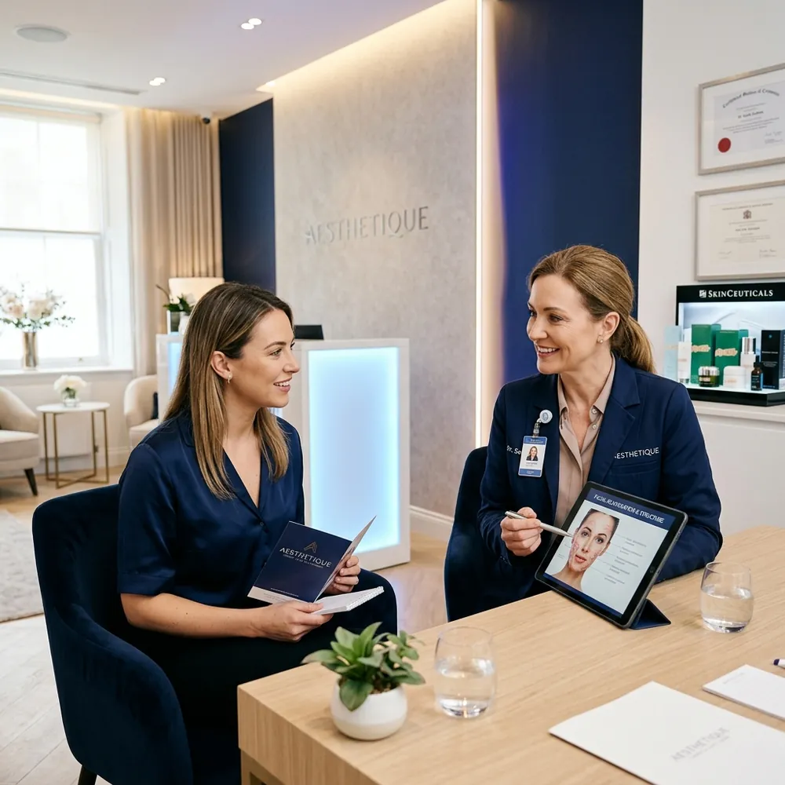
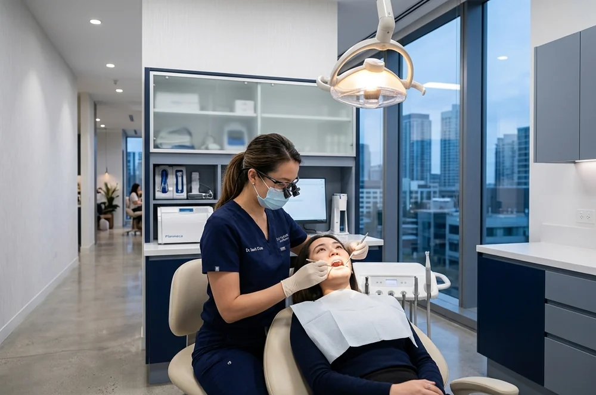
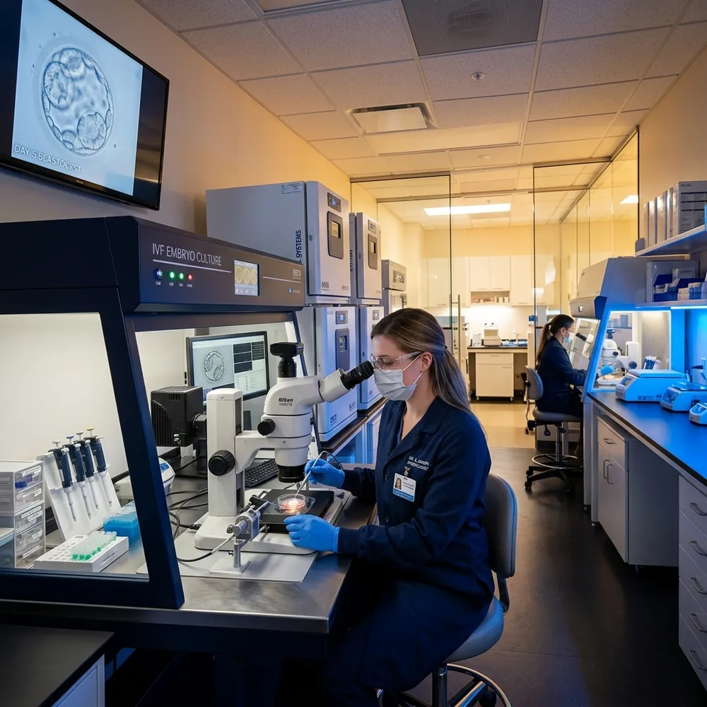
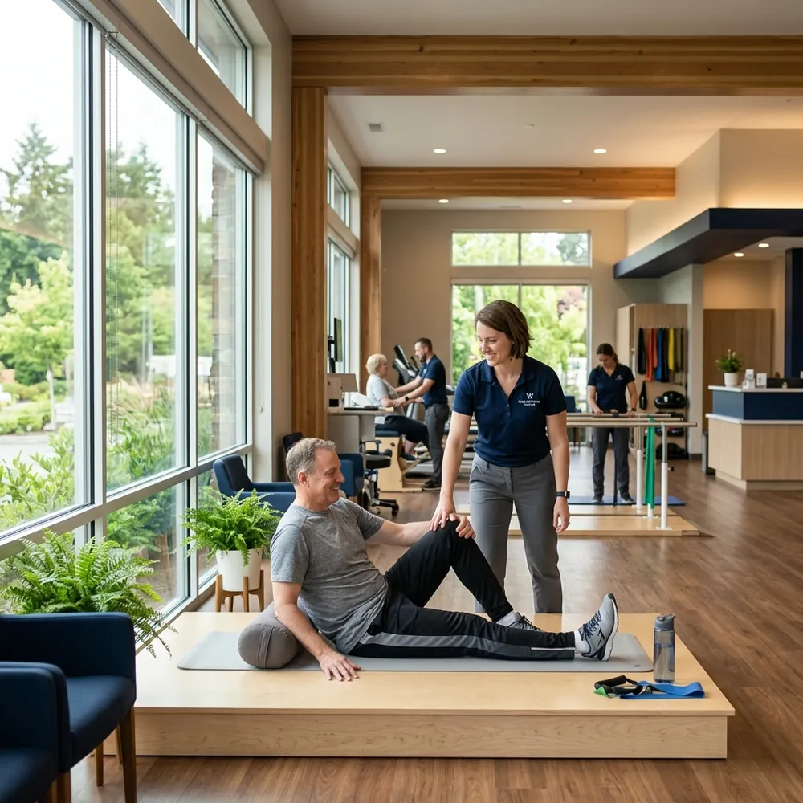
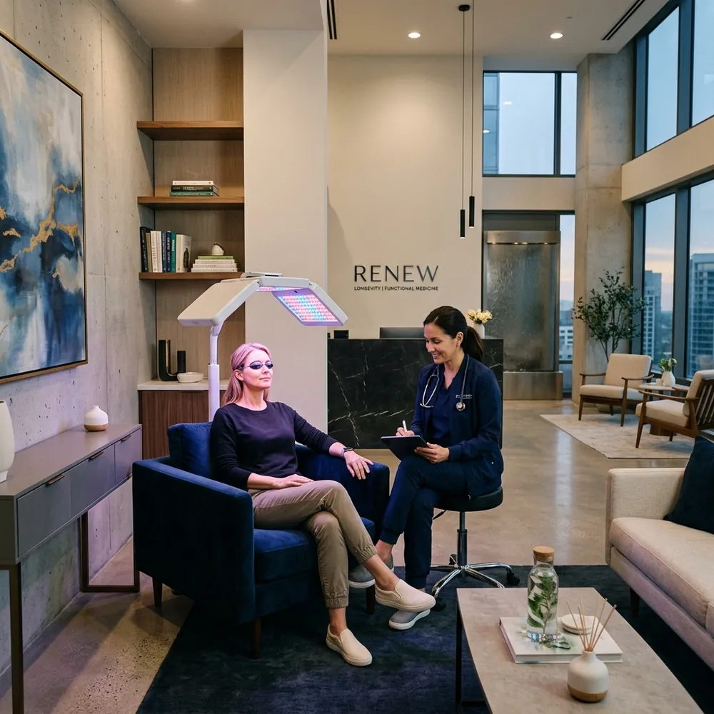
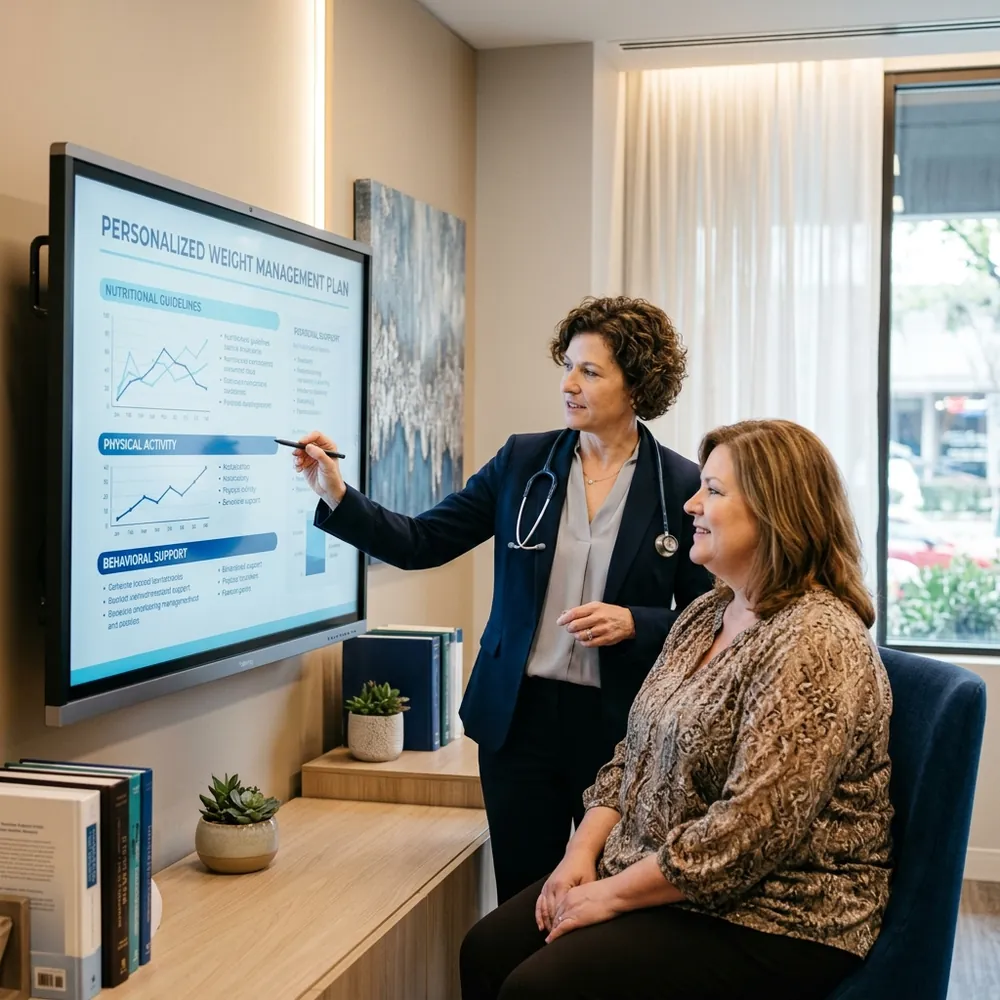
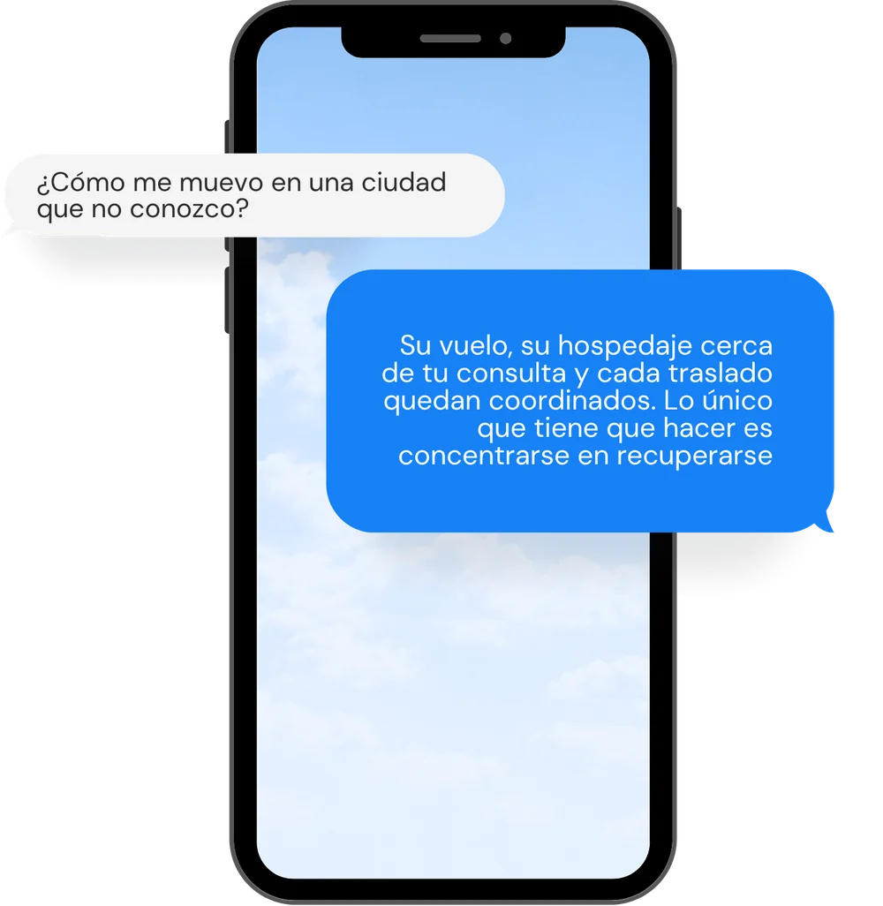
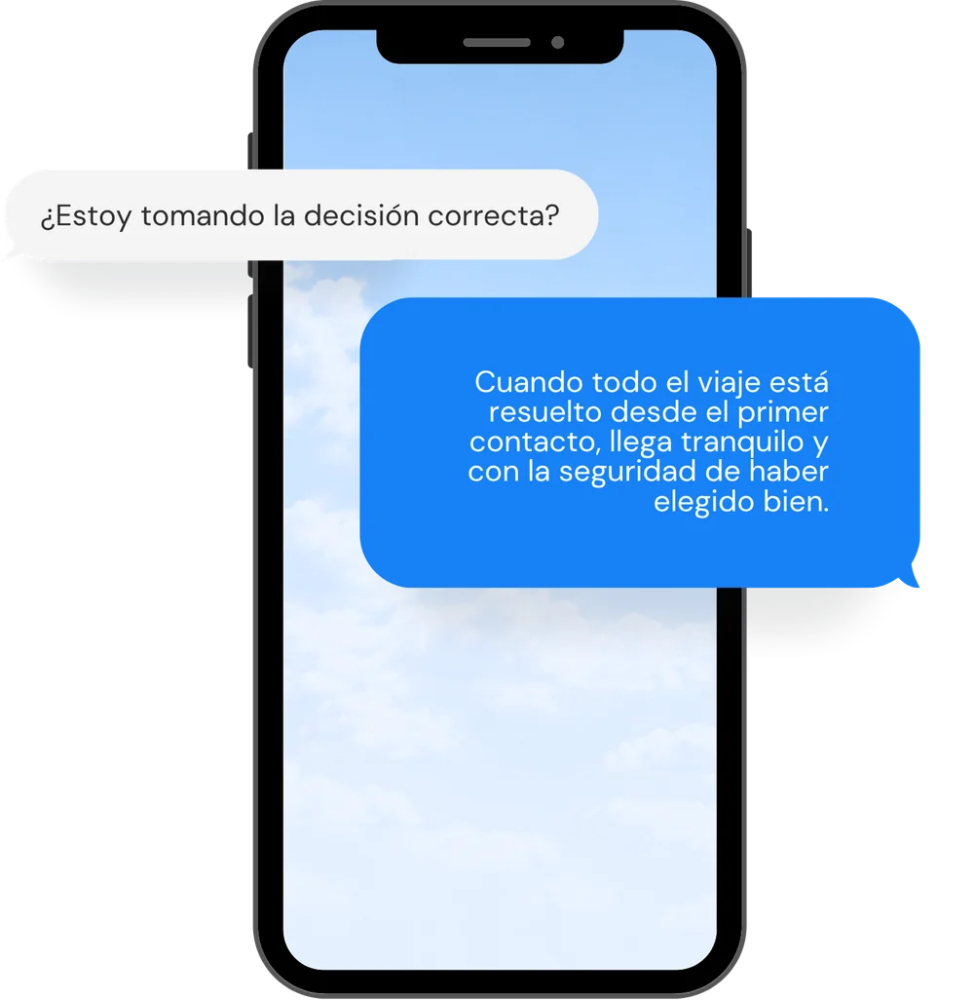

Datos protegidos
Manejamos la información clínica de tu paciente bajo protocolos alineados con HIPAA y la Ley 1581 de Colombia. Solo la mínima necesaria para coordinar la logística, por canales cifrados.

Cada paciente que viaja para tratarse contigo es también una oportunidad de ingreso para ti. En CS Travel nos aliamos con médicos y clínicas que quieren ofrecer más a sus pacientes y ganar por hacerlo.
Quiero saber másSi tienes pacientes que deben viajar para tratarse contigo, estás ante una gran oportunidad de ingreso que quizá aún no aprovechas: la logística de su viaje.
El Programa de Médicos Aliados de CS Travel está diseñado para médicos y clínicas en Colombia que quieren ofrecer a sus pacientes un servicio completo.
Nos encargamos de coordinar vuelos, hospedajes y traslados, como una extensión natural de tu consulta y sin aparecer nunca frente a tu paciente. Así, este vive una experiencia cuidada, organizada y segura desde que sale de su hogar hasta que regresa. Y tú, generas ingresos sin hacer nada diferente a lo que ya haces.
Le comentas a tu paciente que, además del tratamiento, puedes ocuparte de organizar su viaje. Basta con mencionarlo en la misma consulta de siempre.
Nos pides la cotización del viaje y te la enviamos en menos de 24 horas. Incluye el precio base y un margen sugerido sobre ese valor: lo dejas tal cual o decides ganar más.
La compartes como parte de tu servicio. El paciente te paga directamente a ti y nosotros nunca aparecemos frente a él.
Organizamos vuelos, hospedaje y traslados, y resolvemos cualquier imprevisto durante el viaje. Tú te concentras únicamente en atender a tu paciente.
Un paciente que viaja para tratarse contigo valora que todo esté resuelto. Cuando le ofreces el tratamiento y también el viaje coordinado, tu consulta se percibe más premium y más confiable. Y entre un médico que le facilita todo el viaje y otro que no, es natural que se incline por ti.
No se trata solo de un ingreso adicional: es una razón más para que te elija.
Cuando tu paciente viaja, tu prestigio viaja con él. Por eso operamos con los estándares que esa responsabilidad exige.
Manejamos la información clínica de tu paciente bajo protocolos alineados con HIPAA y la Ley 1581 de Colombia. Solo la mínima necesaria para coordinar la logística, por canales cifrados.
Cada paciente cuenta con una persona local que habla su idioma, conoce la ciudad y está disponible durante todo el viaje. Si necesita algo, nos contacta a nosotros, no a ti.
Las condiciones del servicio, los tiempos de respuesta y el acompañamiento quedan pactados por escrito.
Aerolíneas, hoteles y traslados desde una red de más de 30 proveedores directos, con tarifas corporativas y una operación consistente.
Tú sigues siendo el punto de contacto y quien lidera la relación con tu paciente. Nosotros somos la infraestructura logística que opera por detrás, mientras el crédito y la cercanía con él siguen siendo tuyos.
Ante cualquier imprevisto del viaje, respondemos nosotros. Tu atención queda libre para lo que de verdad importa: la salud de tu paciente.
"Antes el paciente llegaba con dudas sobre hotel, traslados y acompañamiento. Ahora llega con todo coordinado y la consulta se siente mucho más completa."
"Lo mejor es que el paciente sigue sintiendo que todo viene de nosotros. CS Travel opera detrás y nos permite mantener la relación directa."
"Para pacientes que vienen de fuera, tener vuelos, hospedaje y traslados resueltos redujo la ansiedad antes del procedimiento."
Estas son algunas de las especialidades con las que trabajamos hoy.






Si atiendes pacientes que viajan y no encontraste tu especialidad aquí, escríbenos. Seguramente podremos ayudarte.
Habla con un asesorTu paciente no solo piensa en su tratamiento. Está por viajar a una ciudad que no conoce bien, muchas veces lejos de casa, para ponerse en tus manos. Esa mezcla de ilusión y nervios influye en su decisión tanto como tu experiencia médica.


Una conversación de 20 minutos es suficiente para ver si el modelo funciona para tu especialidad y tu volumen de pacientes. Sin compromisos.
No. El modelo es white label neto. Toda la comunicación con tu paciente, desde la cotización hasta el seguimiento postoperatorio, sale bajo tu marca y con tu identidad visual. CS Travel opera detrás de escena.
Bajo protocolos alineados con HIPAA y la Ley 1581 de Colombia. La información clínica que necesitamos para coordinar la logística es la mínima necesaria, viaja por canales cifrados y no se comparte con terceros fuera del circuito operativo.
Solo avisarnos cuando un paciente confirma su procedimiento y necesita logística de viaje. El resto lo manejamos nosotros.
CS Travel asume la responsabilidad logística completa. Si hay un imprevisto con el vuelo, el hospedaje o los traslados, nosotros lo resolvemos. Tu responsabilidad sigue siendo exclusivamente médica.
No. No hay costo de afiliación ni inversión inicial. Solo empiezas a usar el servicio cuando tienes un paciente que lo necesita.
Sí. Trabajamos con cualquier especialidad que atiende a pacientes extranjeros en Colombia.